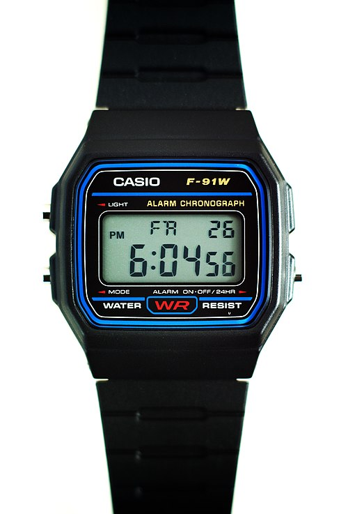

Get a Dumb Watch
Not a smartwatch, and not an expensive watch. Just get a "dumb" watch.
Recently, I felt like my life was too cluttered and disorganized. I was dealing with on-and-off migraines, an inability to stick to healthy habits, and feelings of guilt for not doing certain things on time or forgetting them completely. In general, I felt like I wasn't progressing or hitting any of my goals.
Then, I took a trip to Tokyo. I saw a couple of tourists talking about different watches in a Don Quijote store. Interested, I glanced over and saw a black Casio F-91W with a green trim in a flimsy paper box, selling for a little less than ¥2,000.
I already owned an Apple Watch S10, but I wasn't happy with it. I bought it initially to avoid using my phone, thinking I would use different apps through the watch and avoid "doomscrolling." I figured the tiny interface would be too small to pull me in. In effect, it did the opposite—and the worst part was that it was one more thing I had to charge. (I do have to give it credit, however, for helping me monitor my swims and road cycling.)
So, I decided to buy the Casio. Without thinking too much about it, I put it on and continued with my life.
During my trip, I kept glancing at the watch to check the time because everything was so punctual: meetings with friends, local trains, bus schedules, ski resort lift openings, breakfasts, and reservations. I felt the need to constantly know what time it was, and I could do that without checking my phone.

When I returned home, the habit stuck, but I was disappointed by how little my daily life was organized in any timely manner whatsoever. I used to wake up and go to sleep at different times every day; sometimes I went to work at 9:00 AM, and sometimes at 11:30 AM. Sometimes I would catch the bus, sometimes the train, and sometimes I'd just guilt-trip myself into a ride-hail. Sometimes I cooked dinner, and sometimes I forgot to thaw the chicken—causing me to eat differently every day and lose track of my macros. Sometimes I woke up early enough for a swim, and sometimes I slept in, disappointed with myself.
Call it a post-trip sleep disorder coming back from a timezone ahead, but feeling very tired in the evenings, I started going to bed early. Way early. Usually, I went to sleep around 1–2 AM after doomscrolling or playing video games. After the trip, I couldn't really stay up that late anymore. I started sleeping at around 11 PM. It was likely a habit from the ski resort, where we forced ourselves to wake up early for breakfast to catch the lifts. Suddenly, I had my first routine that stuck for a week: I would go to bed and wake up at the same time every day without even trying.
I started thinking about my day in terms of time instead of "chunks," estimating and calibrating every task I had. Freshening up in the morning: 20 minutes. Door-to-door bus commute: 30 minutes. Relaxing in bed before sleep: 15 minutes. Shopping for groceries online: 15 minutes. Calling my mom: 20 minutes. Returning an item on Amazon, doing laundry, going to yoga, tinkering with a project idea, booking flights—everything.
I kept each of these tasks in my Reminders, which showed up on my calendar. I had building blocks for how much time each of them "cost." Every little thing. I didn't write them down to remember them; I wrote them down so I could forget about them. This allowed me to go about my day anxiety-free: no more worrying about forgetting to call someone, checking in with a friend, or submitting an email by a certain deadline.
Sure, sometimes other things pop up, tasks take longer than anticipated, or I need to break down big tasks when I actually get to them. But I feel like I'm getting so much done, and my anxiety has reduced substantially. I am on my phone and social media much less, and I feel like very little is slipping away from me. I can finally reach the goals I want because they have a specific time attached to them.
Maybe the trip itself helped me more than the watch. It could have been a sudden burst of motivation for self-discipline. I mean, really, why would a watch change my behavior so much? But nevertheless, I thank my watch, and I use it every day.
(Generative AI was used only to correct grammar mistakes in the making of this post)